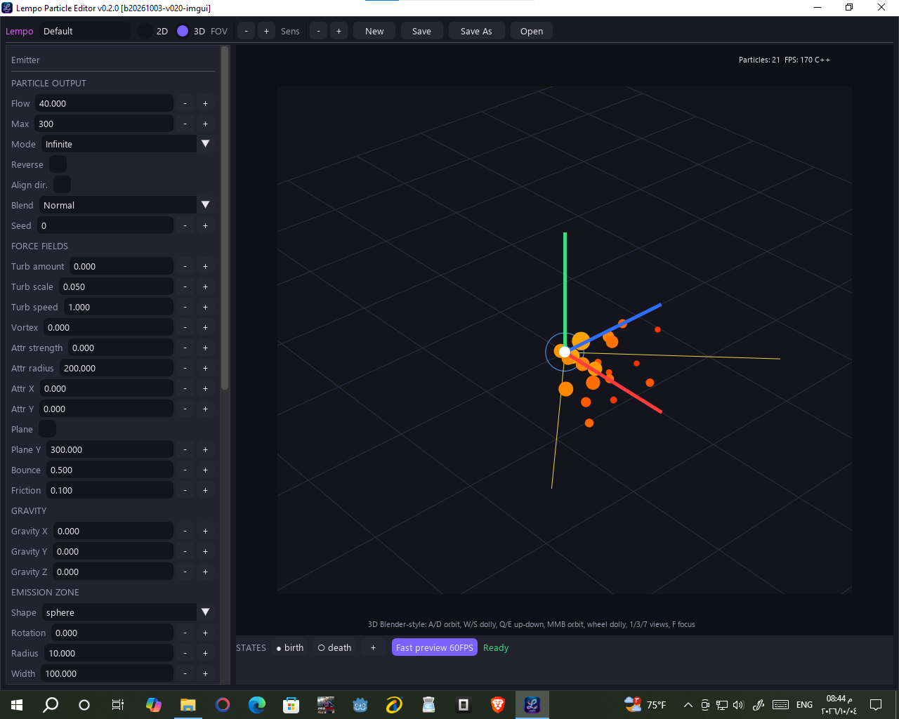
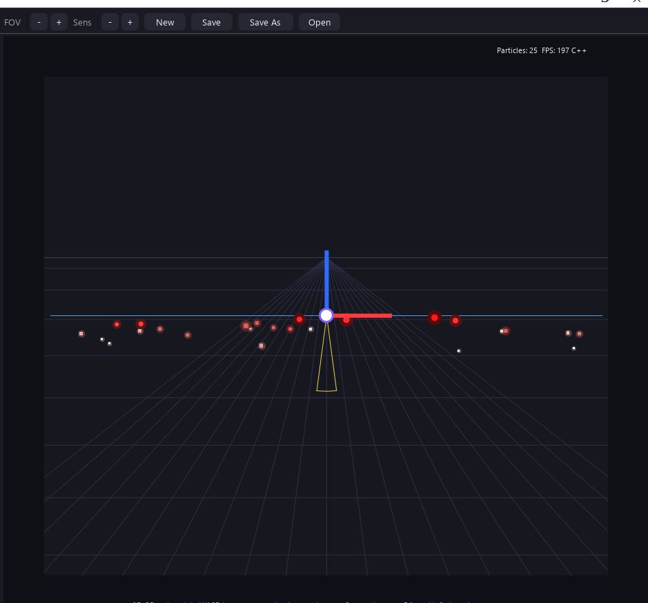
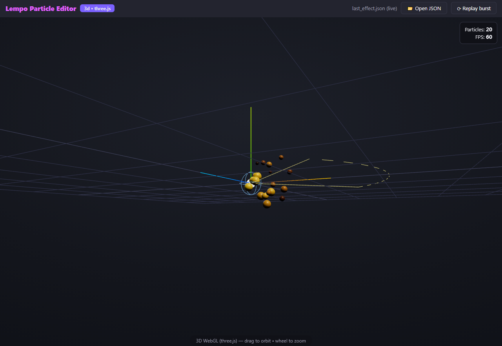
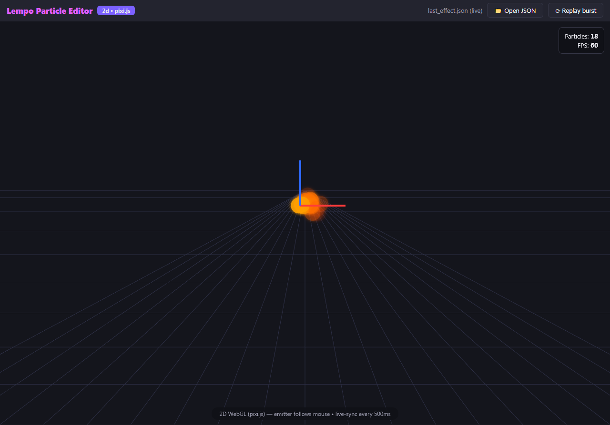
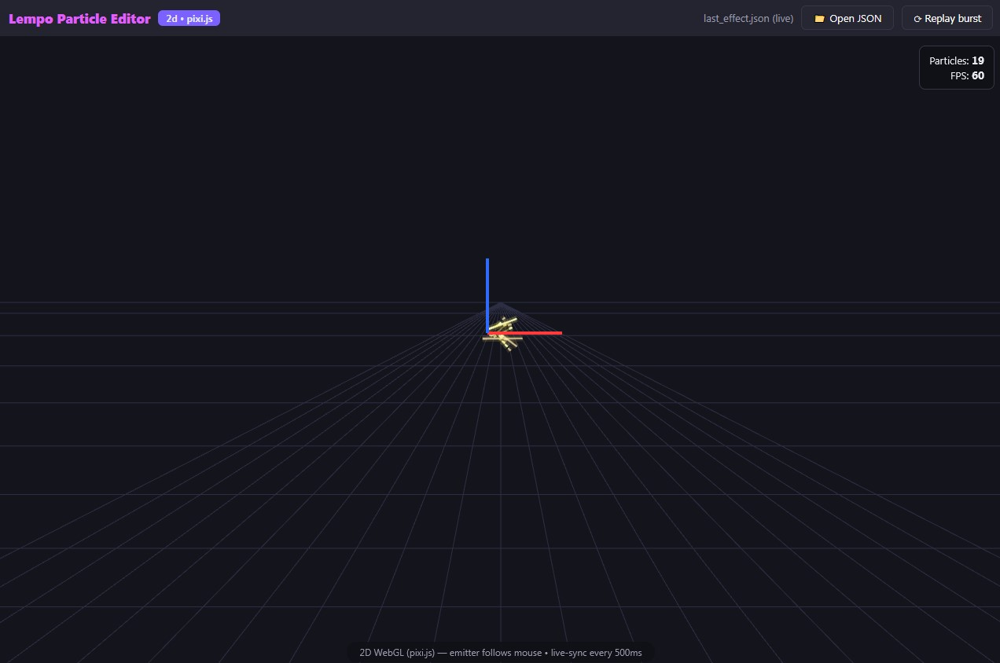

Viewports & Previews
The editor's Dear PyGui viewport and the separate browser fast preview serve different roles. The browser preview renderers share one TypeScript simulation engine; the editor's viewport and GDevelop extension use separate implementations.
1. Dear PyGui editor viewport
The production editor viewport is part of the Dear PyGui interface. It uses the drawlist, with an optional offscreen OpenGL raster layer for dense particle scenes and vector overlays for guides and gizmos. Three.js/PixiJS are not embedded in this viewport.


| Layer | Role |
|---|---|
| Drawlist | Viewport drawing and editor overlays |
| OpenGL raster | Optional particle rasterization for dense scenes |
| Spike B host | viewport_host.py --viewport-host is a migration spike, not production in-place integration. |
2. In-editor GL preview
The optional offscreen OpenGL 3.3 raster layer is built on raw
ctypes (no PyOpenGL or numpy needed). It accelerates dense particle scenes;
the Dear PyGui drawlist continues to render guides and gizmos over the particle layer.
- Adaptive viewport — crisp vector drawlist for small particle counts; above ~900 particles the particle layer renders offscreen and uploads as a texture while guides/gizmo stay vector.
- Blend-aware — every blend mode has an explicit GL formula with a single-warning fallback.
3. Browser fast preview
Click Fast preview 60FPS in the status bar. It opens a separate,
self-contained
live_effect.html (≈1.1 MB, zero network fetches) rendering the
effect live through the shared TypeScript engine: Three.js (3D), PixiJS (2D), with a Canvas
fallback. It has 500 ms live-sync, particle count +
FPS readout, an Open JSON button and Replay burst.


Trail mode renders ribbons in the browser preview and hides particle dots. Rendering details may vary between preview and editor:

Live-sync, explained
Edit anything in the sidebar
Flow, colors, gravity, trail width… every field is part of one effect snapshot.
Snapshot is serialized (≤ 500 ms cadence)
The editor batches rapid changes into one snapshot instead of streaming every keystroke.
Preview applies it atomically
The browser preview applies each snapshot atomically and reinitializes its seeded replay.
When something looks wrong
| Symptom | What to do |
|---|---|
| Editor viewport differs from browser output | The viewport renderers are separate. Compare simulation settings and renderer-specific features; report reproducible differences with an exported effect. |
| Fast preview doesn't open | The file is fully offline. Reopen it from the editor's Fast Preview action. |